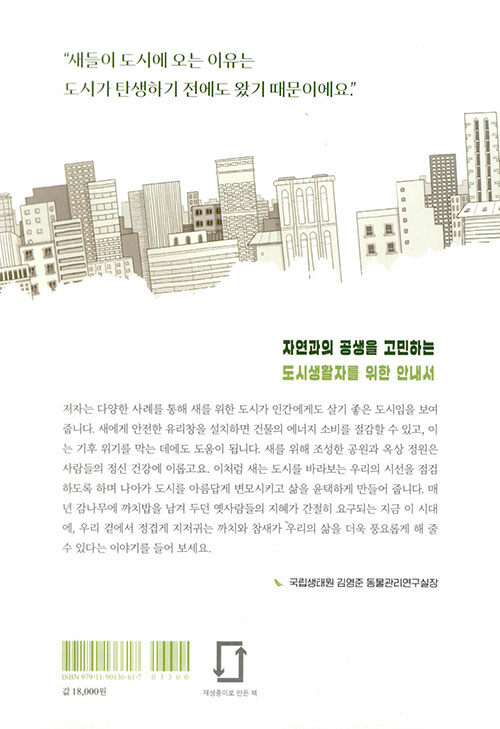
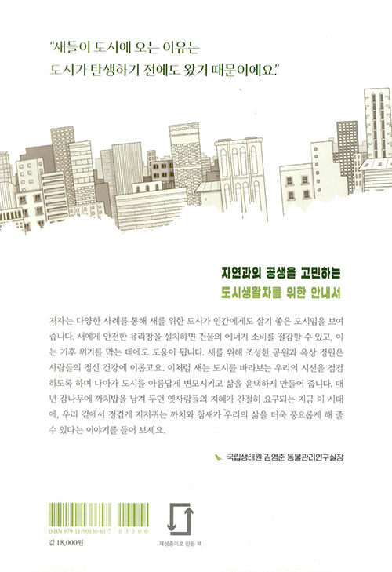

도시를 바꾸는 새
새의 선물을 도시에 들이는 법
티모시 비틀리 지음 / 김숲 옮김
 

2022.01.05. 출간 / 336쪽 / 150*218mm / 무선 / 사회과학, 환경
“새는 도시를 바라보는 우리의 시선을 점검하도록 하며
나아가 도시를 아름답게 변모시키고 삶을 윤택하게 만들어 줍니다.”
국립생태원 김영준 동물관리연구실장 추천 도서
지속 가능한 도시 계획 전문가인 저자 티모시 비틀리는, 새로 말미암아 변화한 도시의 모습과 도시에서 새와 공생하기 위해 힘쓰고 있는 사람들의 이야기를 찾아 이 책으로 엮었다. 새와 사람의 방문이 끊이지 않는 생태 공원으로 재탄생한 런던의 오래된 공업용지와 토론토의 벽돌 공장 이야기, 멸종 위기종인 코뿔새를 보전하기 위해 빌딩 외벽을 수직 정원으로 디자인하도록 한 싱가포르와 유리창 충돌로 생명을 잃는 새를 살리기 위한 건축 가이드라인을 제정한 샌프란시스코와 시카고의 사례 등을 소개한다.
저자는 “하늘을 나는 우리의 친구들을 위해 일상 공간을 재해석하면 도시는 우리에게도 더 살기 좋은 곳이 될 것”이라며, ‘새를 위한 도시’가 그 출발점이 될 수 있다고 주장한다. 도시를 설계하고 디자인할 때 새를 고려하면 자연이 도시의 핵심이 되고, 새에게 안전한 무늬를 넣은 유리창과 옥상 정원은 건물의 에너지 효율을 높여 기후 위기를 막는 데에도 도움이 되며, 버드피더(새 모이대)를 설치하고 새를 관찰하면 스트레스가 해소되고 심리적 안정감이 든다는 이야기다.
새는 도시를 더욱 푸르게 하고, 우리의 삶을 한층 더 다채롭게 만들어 준다. 날개 달린 마법 같은 이 생명체에 집중하는 순간, 우리 앞에 닥친 수많은 문제를 새처럼 높은 시야에서 바라보고 새롭게 대응해 나갈 수 있을 것이다. 자연과의 공생을 고민하는 도시생활자에게 이 책을 권한다.